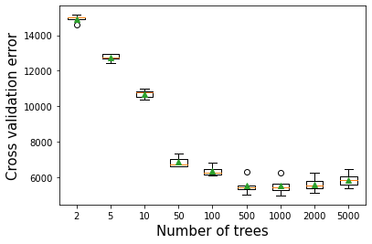
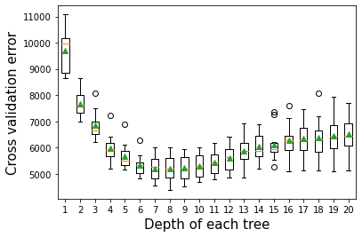
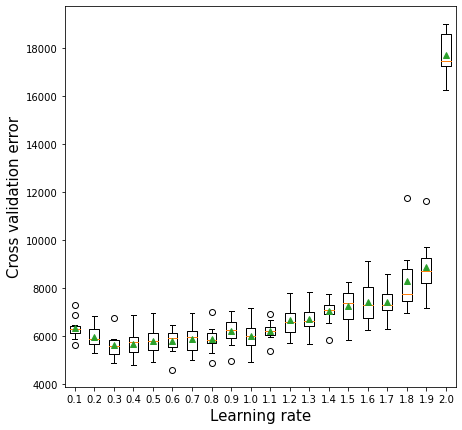
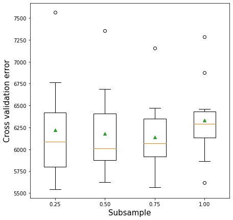
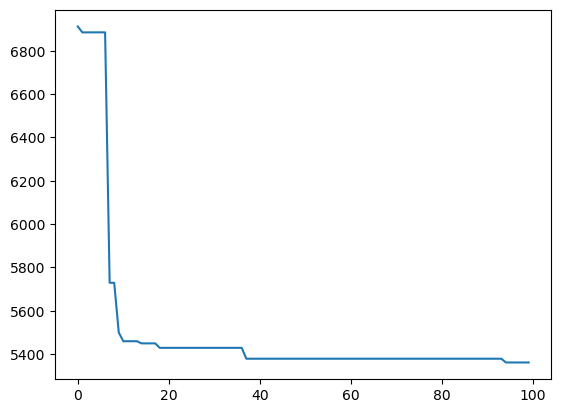
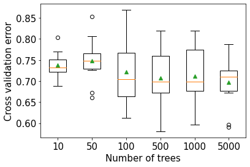
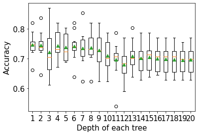
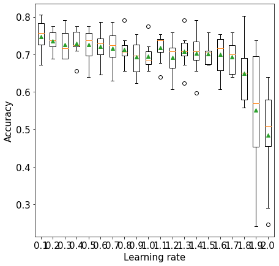
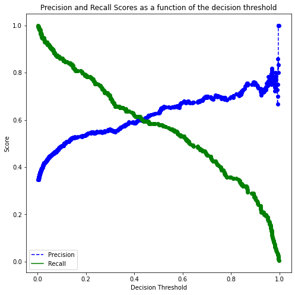
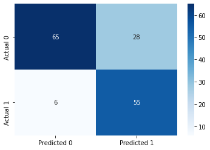

import pandas as pd
import numpy as np
import seaborn as sns
import matplotlib.pyplot as plt
from sklearn.metrics import mean_squared_error
from sklearn.model_selection import cross_val_score,train_test_split, KFold, cross_val_predict
from sklearn.metrics import mean_squared_error,r2_score,roc_curve,auc,precision_recall_curve, accuracy_score, \
recall_score, precision_score, confusion_matrix
from sklearn.tree import DecisionTreeRegressor,DecisionTreeClassifier
from sklearn.model_selection import GridSearchCV, ParameterGrid, StratifiedKFold
from sklearn.ensemble import GradientBoostingRegressor,GradientBoostingClassifier, BaggingRegressor,BaggingClassifier,RandomForestRegressor,RandomForestClassifier,AdaBoostRegressor,AdaBoostClassifier
from sklearn.linear_model import LinearRegression,LogisticRegression
from sklearn.neighbors import KNeighborsRegressor
import itertools as it
import time as time
from skopt import BayesSearchCV
from skopt.space import Real, Categorical, Integer
from skopt.plots import plot_objective, plot_histogram, plot_convergence
import warnings
from IPython import display10 Gradient Boosting
Check the gradient boosting algorithm in section 10.10.2 of the book, Elements of Statistical Learning before using these notes.
Note that in this course, lecture notes are not sufficient, you must read the book for better understanding. Lecture notes are just implementing the concepts of the book on a dataset, but not explaining the concepts elaborately.
10.1 Hyperparameters
There are 5 important parameters to tune in Gradient boosting:
Number of trees
Depth of each tree
Learning rate
Subsample fraction
Maximum features
Let us visualize the accuracy of Gradient boosting when we independently tweak each of the above parameters.
#Using the same datasets as used for linear regression in STAT303-2,
#so that we can compare the non-linear models with linear regression
trainf = pd.read_csv('./Datasets/Car_features_train.csv')
trainp = pd.read_csv('./Datasets/Car_prices_train.csv')
testf = pd.read_csv('./Datasets/Car_features_test.csv')
testp = pd.read_csv('./Datasets/Car_prices_test.csv')
train = pd.merge(trainf,trainp)
test = pd.merge(testf,testp)
train.head()| carID | brand | model | year | transmission | mileage | fuelType | tax | mpg | engineSize | price | |
|---|---|---|---|---|---|---|---|---|---|---|---|
| 0 | 18473 | bmw | 6 Series | 2020 | Semi-Auto | 11 | Diesel | 145 | 53.3282 | 3.0 | 37980 |
| 1 | 15064 | bmw | 6 Series | 2019 | Semi-Auto | 10813 | Diesel | 145 | 53.0430 | 3.0 | 33980 |
| 2 | 18268 | bmw | 6 Series | 2020 | Semi-Auto | 6 | Diesel | 145 | 53.4379 | 3.0 | 36850 |
| 3 | 18480 | bmw | 6 Series | 2017 | Semi-Auto | 18895 | Diesel | 145 | 51.5140 | 3.0 | 25998 |
| 4 | 18492 | bmw | 6 Series | 2015 | Automatic | 62953 | Diesel | 160 | 51.4903 | 3.0 | 18990 |
X = train[['mileage','mpg','year','engineSize']]
Xtest = test[['mileage','mpg','year','engineSize']]
y = train['price']
ytest = test['price']10.2 Gradient boosting for regression
10.2.1 Number of trees vs cross validation error
As per the documentation, Gradient boosting is fairly robust (as compared to AdaBoost) to over-fitting (why?) so a large number usually results in better performance. Note that the number of trees still need to be tuned for optimal performance.
def get_models():
models = dict()
# define number of trees to consider
n_trees = [2, 5, 10, 50, 100, 500, 1000, 2000, 5000]
for n in n_trees:
models[str(n)] = GradientBoostingRegressor(n_estimators=n,random_state=1,loss='huber')
return models
# evaluate a given model using cross-validation
def evaluate_model(model, X, y):
# define the evaluation procedure
cv = KFold(n_splits=5, shuffle=True, random_state=1)
# evaluate the model and collect the results
scores = np.sqrt(-cross_val_score(model, X, y, scoring='neg_mean_squared_error', cv=cv, n_jobs=-1))
return scores
# get the models to evaluate
models = get_models()
# evaluate the models and store results
results, names = list(), list()
for name, model in models.items():
# evaluate the model
scores = evaluate_model(model, X, y)
# store the results
results.append(scores)
names.append(name)
# summarize the performance along the way
print('>%s %.3f (%.3f)' % (name, np.mean(scores), np.std(scores)))
# plot model performance for comparison
plt.boxplot(results, labels=names, showmeans=True)
plt.ylabel('Cross validation error',fontsize=15)
plt.xlabel('Number of trees',fontsize=15)>2 14927.566 (179.475)
>5 12743.148 (189.408)
>10 10704.199 (226.234)
>50 6869.066 (278.885)
>100 6354.656 (270.097)
>500 5515.622 (424.516)
>1000 5515.251 (427.767)
>2000 5600.041 (389.687)
>5000 5854.168 (362.223)Text(0.5, 0, 'Number of trees')
10.2.2 Depth of tree vs cross validation error
As the depth of each weak learner (decision tree) increases, the complexity of the weak learner will increase. As the complexity increases, the prediction bias will decrease, while the prediction variance will increase. Thus, there will be an optimal depth of each weak learner that minimizes the prediction error.
# get a list of models to evaluate
def get_models():
models = dict()
# explore depths from 1 to 10
for i in range(1,21):
# define ensemble model
models[str(i)] = GradientBoostingRegressor(n_estimators=50,random_state=1,max_depth=i,loss='huber')
return models
# evaluate a given model using cross-validation
def evaluate_model(model, X, y):
# define the evaluation procedure
cv = KFold(n_splits=10, shuffle=True, random_state=1)
# evaluate the model and collect the results
scores = np.sqrt(-cross_val_score(model, X, y, scoring='neg_mean_squared_error', cv=cv, n_jobs=-1))
return scores
# get the models to evaluate
models = get_models()
# evaluate the models and store results
results, names = list(), list()
for name, model in models.items():
# evaluate the model
scores = evaluate_model(model, X, y)
# store the results
results.append(scores)
names.append(name)
# summarize the performance along the way
print('>%s %.3f (%.3f)' % (name, np.mean(scores), np.std(scores)))
plt.boxplot(results, labels=names, showmeans=True)
plt.ylabel('Cross validation error',fontsize=15)
plt.xlabel('Depth of each tree',fontsize=15)>1 9693.731 (810.090)
>2 7682.569 (489.841)
>3 6844.225 (536.792)
>4 5972.203 (538.693)
>5 5664.563 (497.882)
>6 5329.130 (404.330)
>7 5210.934 (461.038)
>8 5197.204 (494.957)
>9 5227.975 (478.789)
>10 5299.782 (446.509)
>11 5433.822 (451.673)
>12 5617.946 (509.797)
>13 5876.424 (542.981)
>14 6030.507 (560.447)
>15 6125.914 (643.852)
>16 6294.784 (672.646)
>17 6342.327 (677.050)
>18 6372.418 (791.068)
>19 6456.471 (741.693)
>20 6503.622 (759.193)Text(0.5, 0, 'Depth of each tree')
10.2.3 Learning rate vs cross validation error
The optimal learning rate will depend on the number of trees, and vice-versa. If the learning rate is too low, it will take several trees to “learn” the response. If the learning rate is high, the response will be “learned” quickly (with fewer) trees. Learning too quickly will be prone to overfitting, while learning too slowly will be computationally expensive. Thus, there will be an optimal learning rate to minimize the prediction error.
def get_models():
models = dict()
# explore learning rates from 0.1 to 2 in 0.1 increments
for i in np.arange(0.1, 2.1, 0.1):
key = '%.1f' % i
models[key] = GradientBoostingRegressor(learning_rate=i,random_state=1,loss='huber')
return models
# evaluate a given model using cross-validation
def evaluate_model(model, X, y):
# define the evaluation procedure
cv = KFold(n_splits=10, shuffle=True, random_state=1)
# evaluate the model and collect the results
scores = np.sqrt(-cross_val_score(model, X, y, scoring='neg_mean_squared_error', cv=cv, n_jobs=-1))
return scores
# get the models to evaluate
models = get_models()
# evaluate the models and store results
results, names = list(), list()
for name, model in models.items():
# evaluate the model
scores = evaluate_model(model, X, y)
# store the results
results.append(scores)
names.append(name)
# summarize the performance along the way
print('>%s %.1f (%.1f)' % (name, np.mean(scores), np.std(scores)))
# plot model performance for comparison
plt.figure(figsize=(7, 7))
plt.boxplot(results, labels=names, showmeans=True)
plt.ylabel('Cross validation error',fontsize=15)
plt.xlabel('Learning rate',fontsize=15)>0.1 6329.8 (450.7)
>0.2 5942.9 (454.8)
>0.3 5618.4 (490.8)
>0.4 5665.9 (577.3)
>0.5 5783.5 (561.7)
>0.6 5773.8 (500.3)
>0.7 5875.5 (565.7)
>0.8 5878.5 (540.5)
>0.9 6214.4 (594.3)
>1.0 5986.1 (601.5)
>1.1 6216.5 (395.3)
>1.2 6667.5 (657.2)
>1.3 6717.4 (594.4)
>1.4 7048.4 (531.7)
>1.5 7265.0 (742.0)
>1.6 7404.4 (868.2)
>1.7 7425.8 (606.3)
>1.8 8283.0 (1345.3)
>1.9 8872.2 (1137.9)
>2.0 17713.3 (865.3)Text(0.5, 0, 'Learning rate')
10.2.4 Subsampling vs cross validation error
def get_models():
models = dict()
# explore learning rates from 0.1 to 2 in 0.1 increments
for s in np.arange(0.25, 1.1, 0.25):
key = '%.2f' % s
models[key] = GradientBoostingRegressor(random_state=1,subsample=s,loss='huber')
return models
# evaluate a given model using cross-validation
def evaluate_model(model, X, y):
# define the evaluation procedure
cv = KFold(n_splits=10, shuffle=True, random_state=1)
# evaluate the model and collect the results
scores = np.sqrt(-cross_val_score(model, X, y, scoring='neg_mean_squared_error', cv=cv, n_jobs=-1))
return scores
# get the models to evaluate
models = get_models()
# evaluate the models and store results
results, names = list(), list()
for name, model in models.items():
# evaluate the model
scores = evaluate_model(model, X, y)
# store the results
results.append(scores)
names.append(name)
# summarize the performance along the way
print('>%s %.2f (%.2f)' % (name, np.mean(scores), np.std(scores)))
# plot model performance for comparison
plt.figure(figsize=(7, 7))
plt.boxplot(results, labels=names, showmeans=True)
plt.ylabel('Cross validation error',fontsize=15)
plt.xlabel('Subsample',fontsize=15)>0.25 6219.59 (569.97)
>0.50 6178.28 (501.87)
>0.75 6141.96 (432.66)
>1.00 6329.79 (450.72)Text(0.5, 0, 'Subsample')
10.2.5 Maximum features vs cross-validation error
def get_models():
models = dict()
# explore learning rates from 0.1 to 2 in 0.1 increments
for s in np.arange(0.25, 1.1, 0.25):
key = '%.2f' % s
models[key] = GradientBoostingRegressor(random_state=1,max_features=s,loss='huber')
return models
# evaluate a given model using cross-validation
def evaluate_model(model, X, y):
# define the evaluation procedure
cv = KFold(n_splits=10, shuffle=True, random_state=1)
# evaluate the model and collect the results
scores = np.sqrt(-cross_val_score(model, X, y, scoring='neg_mean_squared_error', cv=cv, n_jobs=-1))
return scores
# get the models to evaluate
models = get_models()
# evaluate the models and store results
results, names = list(), list()
for name, model in models.items():
# evaluate the model
scores = evaluate_model(model, X, y)
# store the results
results.append(scores)
names.append(name)
# summarize the performance along the way
print('>%s %.2f (%.2f)' % (name, np.mean(scores), np.std(scores)))
# plot model performance for comparison
plt.figure(figsize=(7, 7))
plt.boxplot(results, labels=names, showmeans=True)
plt.ylabel('Cross validation error',fontsize=15)
plt.xlabel('Maximum features',fontsize=15)>0.25 6654.27 (567.72)
>0.50 6373.92 (538.53)
>0.75 6325.55 (470.41)
>1.00 6329.79 (450.72)Text(0.5, 0, 'Maximum features')
10.2.6 Tuning Gradient boosting for regression
As the optimal value of the parameters depend on each other, we need to optimize them simultaneously.
start_time = time.time()
model = GradientBoostingRegressor(random_state=1,loss='huber')
grid = dict()
grid['n_estimators'] = [10, 50, 100,200,500]
grid['learning_rate'] = [0.0001, 0.001, 0.01,0.1, 1.0]
grid['max_depth'] = [3,5,8,10,12,15]
# define the evaluation procedure
cv = KFold(n_splits=5, shuffle=True, random_state=1)
# define the grid search procedure
grid_search = GridSearchCV(estimator=model, param_grid=grid, n_jobs=-1, cv=cv, scoring='neg_mean_squared_error',
verbose = True)
# execute the grid search
grid_result = grid_search.fit(X, y)
# summarize the best score and configuration
print("Best: %f using %s" % (np.sqrt(-grid_result.best_score_), grid_result.best_params_))
# summarize all scores that were evaluated
means = grid_result.cv_results_['mean_test_score']
stds = grid_result.cv_results_['std_test_score']
params = grid_result.cv_results_['params']
#for mean, stdev, param in zip(means, stds, params):
# print("%f (%f) with: %r" % (mean, stdev, param)
print("Time taken = ",(time.time()-start_time)/60," minutes")Best: 5190.765919 using {'learning_rate': 0.1, 'max_depth': 8, 'n_estimators': 100}
Time taken = 46.925597019990285 minutesNote that the code takes 46 minutes to run. In case of a lot of hyperparameters, RandomizedSearchCV may be preferred to trade-off between optimality of the solution and computational cost.
model = GradientBoostingRegressor(random_state=1, loss='huber')
grid = dict()
grid['n_estimators'] = Integer(2, 1000)
grid['learning_rate'] = Real(0.0001, 1.0)
grid['max_leaf_nodes'] = Integer(4, 5000)
grid['subsample'] = Real(0.1, 1)
grid['max_features'] = Real(0.1, 1)
kfold = KFold(n_splits = 5, shuffle = True, random_state = 1)
gcv = BayesSearchCV(model, search_spaces = grid, cv = kfold, n_iter = 100, random_state = 1,
scoring = 'neg_root_mean_squared_error', n_jobs = -1)
paras = list(gcv.search_spaces.keys())
paras.sort()
start_time = time.time()
def monitor(optim_result):
cv_values = pd.Series(optim_result['func_vals']).cummin()
display.clear_output(wait = True)
min_ind = pd.Series(optim_result['func_vals']).argmin()
print(paras, "=", optim_result['x_iters'][min_ind], pd.Series(optim_result['func_vals']).min())
print("Time so far = ", np.round((time.time()-start_time)/60), "minutes")
sns.lineplot(cv_values)
plt.show()
gcv.fit(X, y, callback = monitor)['learning_rate', 'max_features', 'max_leaf_nodes', 'n_estimators', 'subsample'] = [0.23102084158310995, 0.315075948850183, 5000, 817, 1.0] 5360.92726695485
Time so far = 21.0 minutes
BayesSearchCV(cv=KFold(n_splits=5, random_state=1, shuffle=True),
estimator=GradientBoostingRegressor(loss='huber', random_state=1),
n_iter=100, n_jobs=-1, random_state=1,
scoring='neg_root_mean_squared_error',
search_spaces={'learning_rate': Real(low=0.0001, high=1.0, prior='uniform', transform='normalize'),
'max_features': Real(low=0.1, high=1, prior='uniform', transform='normalize'),
'max_leaf_nodes': Integer(low=4, high=5000, prior='uniform', transform='normalize'),
'n_estimators': Integer(low=2, high=1000, prior='uniform', transform='normalize'),
'subsample': Real(low=0.1, high=1, prior='uniform', transform='normalize')})In a Jupyter environment, please rerun this cell to show the HTML representation or trust the notebook. On GitHub, the HTML representation is unable to render, please try loading this page with nbviewer.org.
BayesSearchCV(cv=KFold(n_splits=5, random_state=1, shuffle=True),
estimator=GradientBoostingRegressor(loss='huber', random_state=1),
n_iter=100, n_jobs=-1, random_state=1,
scoring='neg_root_mean_squared_error',
search_spaces={'learning_rate': Real(low=0.0001, high=1.0, prior='uniform', transform='normalize'),
'max_features': Real(low=0.1, high=1, prior='uniform', transform='normalize'),
'max_leaf_nodes': Integer(low=4, high=5000, prior='uniform', transform='normalize'),
'n_estimators': Integer(low=2, high=1000, prior='uniform', transform='normalize'),
'subsample': Real(low=0.1, high=1, prior='uniform', transform='normalize')})GradientBoostingRegressor(loss='huber', random_state=1)
GradientBoostingRegressor(loss='huber', random_state=1)
#Model based on the optimal parameters
model = GradientBoostingRegressor(max_depth=8,n_estimators=100,learning_rate=0.1,
random_state=1,loss='huber').fit(X,y)#RMSE of the optimized model on test data
print("Gradient boost RMSE = ",np.sqrt(mean_squared_error(model.predict(Xtest),ytest)))Gradient boost RMSE = 5405.787029062213#Model based on the optimal parameters
model_bayes = GradientBoostingRegressor(max_leaf_nodes=5000,n_estimators=817,learning_rate=0.23, max_features=0.31,
random_state=1,subsample=1.0,loss='huber').fit(X,y)#RMSE of the optimized model on test data
print("Gradient boost RMSE = ",np.sqrt(mean_squared_error(model_bayes.predict(Xtest),ytest)))Gradient boost RMSE = 5734.200307094321#Let us combine the Gradient boost model with other models
model2 = AdaBoostRegressor(base_estimator=DecisionTreeRegressor(max_depth=10),n_estimators=50,learning_rate=1.0,
random_state=1).fit(X,y)
print("AdaBoost RMSE = ",np.sqrt(mean_squared_error(model2.predict(Xtest),ytest)))
model3 = RandomForestRegressor(n_estimators=300, random_state=1,
n_jobs=-1, max_features=2).fit(X, y)
print("Random Forest RMSE = ",np.sqrt(mean_squared_error(model3.predict(Xtest),ytest)))AdaBoost RMSE = 5693.165811600585
Random Forest RMSE = 5642.45839697972#Ensemble model
pred1=model.predict(Xtest)#Gradient boost
pred2=model2.predict(Xtest)#Adaboost
pred3=model3.predict(Xtest)#Random forest
pred = 0.34*pred1+0.33*pred2+0.33*pred3 #Higher weight to the better model
print("Ensemble model RMSE = ", np.sqrt(mean_squared_error(pred,ytest)))Ensemble model RMSE = 5364.47822774827910.2.7 Ensemble modeling (for regression models)
#Ensemble model
pred1=model.predict(Xtest)#Gradient boost
pred2=model2.predict(Xtest)#Adaboost
pred3=model3.predict(Xtest)#Random forest
pred = 0.6*pred1+0.2*pred2+0.2*pred3 #Higher weight to the better model
print("Ensemble model RMSE = ", np.sqrt(mean_squared_error(pred,ytest)))Ensemble model RMSE = 5323.119083375402Combined, the random forest model, gradient boost and the Adaboost model do better than each of the individual models.
Note that ideally we should do K-fold cross validation to figure out the optimal weights. We’ll learn about ensembling techniques later in the course.
10.3 Gradient boosting for classification
Below is the Gradient boost implementation on a classification problem. The takeaways are the same as that of the regression problem above.
train = pd.read_csv('./Datasets/diabetes_train.csv')
test = pd.read_csv('./Datasets/diabetes_test.csv')X = train.drop(columns = 'Outcome')
Xtest = test.drop(columns = 'Outcome')
y = train['Outcome']
ytest = test['Outcome']10.3.1 Number of trees vs cross validation accuracy
def get_models():
models = dict()
# define number of trees to consider
n_trees = [10, 50, 100, 500, 1000, 5000]
for n in n_trees:
models[str(n)] = GradientBoostingClassifier(n_estimators=n,random_state=1)
return models
# evaluate a given model using cross-validation
def evaluate_model(model, X, y):
# define the evaluation procedure
cv = StratifiedKFold(n_splits=10, shuffle=True, random_state=1)
# evaluate the model and collect the results
scores = cross_val_score(model, X, y, scoring='accuracy', cv=cv, n_jobs=-1)
return scores
# get the models to evaluate
models = get_models()
# evaluate the models and store results
results, names = list(), list()
for name, model in models.items():
# evaluate the model
scores = evaluate_model(model, X, y)
# store the results
results.append(scores)
names.append(name)
# summarize the performance along the way
print('>%s %.3f (%.3f)' % (name, np.mean(scores), np.std(scores)))
# plot model performance for comparison
plt.boxplot(results, labels=names, showmeans=True)
plt.ylabel('Cross validation error',fontsize=15)
plt.xlabel('Number of trees',fontsize=15)>10 0.738 (0.031)
>50 0.748 (0.054)
>100 0.722 (0.075)
>500 0.707 (0.066)
>1000 0.712 (0.075)
>5000 0.697 (0.061)Text(0.5, 0, 'Number of trees')
10.3.2 Depth of each tree vs cross validation accuracy
# get a list of models to evaluate
def get_models():
models = dict()
# explore depths from 1 to 10
for i in range(1,21):
# define ensemble model
models[str(i)] = GradientBoostingClassifier(random_state=1,max_depth=i)
return models
# evaluate a given model using cross-validation
def evaluate_model(model, X, y):
# define the evaluation procedure
cv = StratifiedKFold(n_splits=10, shuffle=True, random_state=1)
# evaluate the model and collect the results
scores = cross_val_score(model, X, y, scoring='accuracy', cv=cv, n_jobs=-1)
return scores
# get the models to evaluate
models = get_models()
# evaluate the models and store results
results, names = list(), list()
for name, model in models.items():
# evaluate the model
scores = evaluate_model(model, X, y)
# store the results
results.append(scores)
names.append(name)
# summarize the performance along the way
print('>%s %.3f (%.3f)' % (name, np.mean(scores), np.std(scores)))
plt.boxplot(results, labels=names, showmeans=True)
plt.ylabel('Accuracy',fontsize=15)
plt.xlabel('Depth of each tree',fontsize=15)>1 0.746 (0.040)
>2 0.744 (0.046)
>3 0.722 (0.075)
>4 0.743 (0.049)
>5 0.738 (0.046)
>6 0.741 (0.047)
>7 0.735 (0.057)
>8 0.736 (0.051)
>9 0.728 (0.055)
>10 0.710 (0.050)
>11 0.697 (0.061)
>12 0.681 (0.056)
>13 0.709 (0.047)
>14 0.702 (0.048)
>15 0.705 (0.048)
>16 0.700 (0.042)
>17 0.699 (0.048)
>18 0.697 (0.050)
>19 0.696 (0.042)
>20 0.697 (0.048)Text(0.5, 0, 'Depth of each tree')
10.3.3 Learning rate vs cross validation accuracy
def get_models():
models = dict()
# explore learning rates from 0.1 to 2 in 0.1 increments
for i in np.arange(0.1, 2.1, 0.1):
key = '%.1f' % i
models[key] = GradientBoostingClassifier(learning_rate=i,random_state=1)
return models
# evaluate a given model using cross-validation
def evaluate_model(model, X, y):
# define the evaluation procedure
cv = KFold(n_splits=10, shuffle=True, random_state=1)
# evaluate the model and collect the results
scores = cross_val_score(model, X, y, scoring='accuracy', cv=cv, n_jobs=-1)
return scores
# get the models to evaluate
models = get_models()
# evaluate the models and store results
results, names = list(), list()
for name, model in models.items():
# evaluate the model
scores = evaluate_model(model, X, y)
# store the results
results.append(scores)
names.append(name)
# summarize the performance along the way
print('>%s %.3f (%.3f)' % (name, np.mean(scores), np.std(scores)))
# plot model performance for comparison
plt.figure(figsize=(7, 7))
plt.boxplot(results, labels=names, showmeans=True)
plt.ylabel('Accuracy',fontsize=15)
plt.xlabel('Learning rate',fontsize=15)>0.1 0.747 (0.044)
>0.2 0.736 (0.028)
>0.3 0.726 (0.039)
>0.4 0.730 (0.034)
>0.5 0.726 (0.041)
>0.6 0.722 (0.043)
>0.7 0.717 (0.050)
>0.8 0.713 (0.033)
>0.9 0.694 (0.045)
>1.0 0.695 (0.032)
>1.1 0.718 (0.034)
>1.2 0.692 (0.045)
>1.3 0.708 (0.042)
>1.4 0.704 (0.050)
>1.5 0.702 (0.028)
>1.6 0.700 (0.050)
>1.7 0.694 (0.044)
>1.8 0.650 (0.075)
>1.9 0.551 (0.163)
>2.0 0.484 (0.123)Text(0.5, 0, 'Learning rate')
10.3.4 Tuning Gradient boosting Classifier
start_time = time.time()
model = GradientBoostingClassifier(random_state=1)
grid = dict()
grid['n_estimators'] = [10, 50, 100,200,500]
grid['learning_rate'] = [0.0001, 0.001, 0.01,0.1, 1.0]
grid['max_depth'] = [1,2,3,4,5]
grid['subsample'] = [0.5,1.0]
# define the evaluation procedure
cv = StratifiedKFold(n_splits=5, shuffle=True, random_state=1)
# define the grid search procedure
grid_search = GridSearchCV(estimator=model, param_grid=grid, n_jobs=-1, cv=cv, verbose = True, scoring = 'recall')
# execute the grid search
grid_result = grid_search.fit(X, y)
# summarize the best score and configuration
print("Best: %f using %s" % (grid_result.best_score_, grid_result.best_params_))
print("Time taken = ", time.time() - start_time, "seconds")Fitting 5 folds for each of 250 candidates, totalling 1250 fits
Best: 0.701045 using {'learning_rate': 1.0, 'max_depth': 3, 'n_estimators': 200, 'subsample': 0.5}
Time taken = 32.46394085884094#Model based on the optimal parameters
model = GradientBoostingClassifier(random_state=1,max_depth=3,learning_rate=0.1,subsample=0.5,
n_estimators=200).fit(X,y)
# Note that we are using the cross-validated predicted probabilities, instead of directly using the
# predicted probabilities on train data, as the model may be overfitting on the train data, and
# may lead to misleading results
cross_val_ypred = cross_val_predict(GradientBoostingClassifier(random_state=1,max_depth=3,
learning_rate=0.1,subsample=0.5,
n_estimators=200), X, y, cv = 5, method = 'predict_proba')
p, r, thresholds = precision_recall_curve(y, cross_val_ypred[:,1])
def plot_precision_recall_vs_threshold(precisions, recalls, thresholds):
plt.figure(figsize=(8, 8))
plt.title("Precision and Recall Scores as a function of the decision threshold")
plt.plot(thresholds, precisions[:-1], "b--", label="Precision")
plt.plot(thresholds, recalls[:-1], "g-", label="Recall")
plt.plot(thresholds, precisions[:-1], "o", color = 'blue')
plt.plot(thresholds, recalls[:-1], "o", color = 'green')
plt.ylabel("Score")
plt.xlabel("Decision Threshold")
plt.legend(loc='best')
plt.legend()
plot_precision_recall_vs_threshold(p, r, thresholds)
# Thresholds with precision and recall
all_thresholds = np.concatenate([thresholds.reshape(-1,1), p[:-1].reshape(-1,1), r[:-1].reshape(-1,1)], axis = 1)
recall_more_than_80 = all_thresholds[all_thresholds[:,2]>0.8,:]
# As the values in 'recall_more_than_80' are arranged in decreasing order of recall and increasing threshold,
# the last value will provide the maximum threshold probability for the recall to be more than 80%
# We wish to find the maximum threshold probability to obtain the maximum possible precision
recall_more_than_80[recall_more_than_80.shape[0]-1]array([0.18497144, 0.53205128, 0.80193237])#Optimal decision threshold probability
thres = recall_more_than_80[recall_more_than_80.shape[0]-1][0]
thres0.18497143500912738# Performance metrics computation for the optimum decision threshold probability
desired_threshold = thres
y_pred_prob = model.predict_proba(Xtest)[:,1]
# Classifying observations in the positive class (y = 1) if the predicted probability is greater
# than the desired decision threshold probability
y_pred = y_pred_prob > desired_threshold
y_pred = y_pred.astype(int)
#Computing the accuracy
print("Accuracy: ",accuracy_score(y_pred, ytest)*100)
#Computing the ROC-AUC
fpr, tpr, auc_thresholds = roc_curve(ytest, y_pred_prob)
print("ROC-AUC: ",auc(fpr, tpr))# AUC of ROC
#Computing the precision and recall
print("Precision: ", precision_score(ytest, y_pred))
print("Recall: ", recall_score(ytest, y_pred))
#Confusion matrix
cm = pd.DataFrame(confusion_matrix(ytest, y_pred),
columns=['Predicted 0', 'Predicted 1'], index = ['Actual 0', 'Actual 1'])
sns.heatmap(cm, annot=True, cmap='Blues', fmt='g');Accuracy: 77.92207792207793
ROC-AUC: 0.8704389212057112
Precision: 0.6626506024096386
Recall: 0.9016393442622951
The model seems to be similar to the Adaboost model. However, gradient boosting algorithms with robust loss functions can perform better than Adaboost in the presence of outliers (in terms of response) in the data.
10.4 Faster algorithms and tuning tips
Check out HistGradientBoostingRegressor() and HistGradientBoostingClassifier() for a faster gradient boosting algorithm for big datasets (more than 10,000 observations).
Check out tips for faster hyperparameter tuning, such as tuning max_leaf_nodes instead of max_depth here.